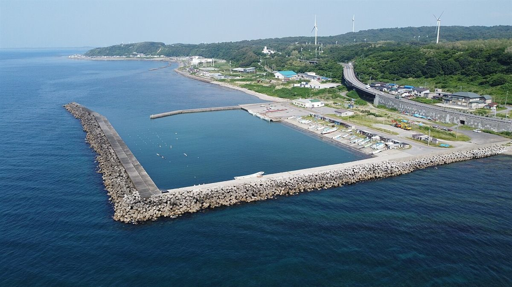
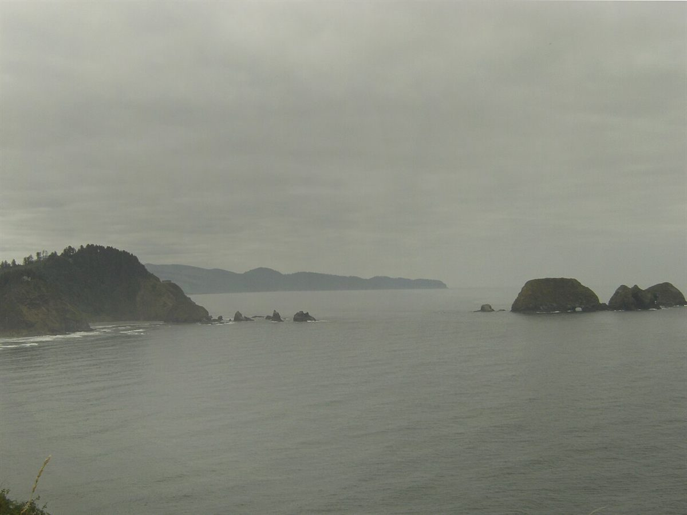

Access
アクセス
青森県むつ市中央の店舗です。
| 所在地 | 〒035-0073 青森県むつ市中央2丁目9-65 |
|---|---|
| 電話 | なし |
| 営業時間 | 準備中 |
| 定休日 | 準備中 |
| 駐車場 | 準備中 |
| SNS | Instagram @coffeestand_no.52 |
お問い合わせはInstagramからお願いします。
Image
北の海辺のイメージ


どちらも店の周辺ではなく、青森県内の別の町と国外で撮影された写真のイメージです。
青森県むつ市中央の店舗です。
| 所在地 | 〒035-0073 青森県むつ市中央2丁目9-65 |
|---|---|
| 電話 | なし |
| 営業時間 | 準備中 |
| 定休日 | 準備中 |
| 駐車場 | 準備中 |
| SNS | Instagram @coffeestand_no.52 |
お問い合わせはInstagramからお願いします。


どちらも店の周辺ではなく、青森県内の別の町と国外で撮影された写真のイメージです。